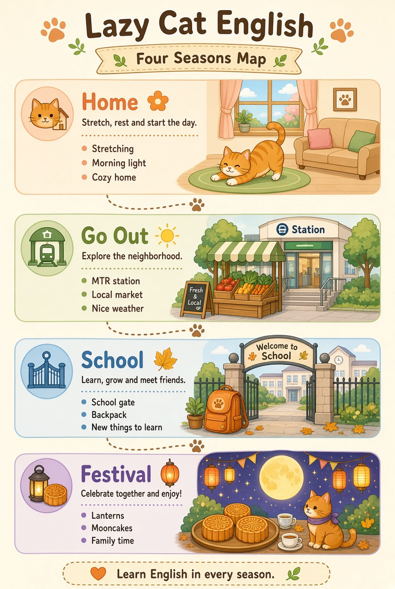
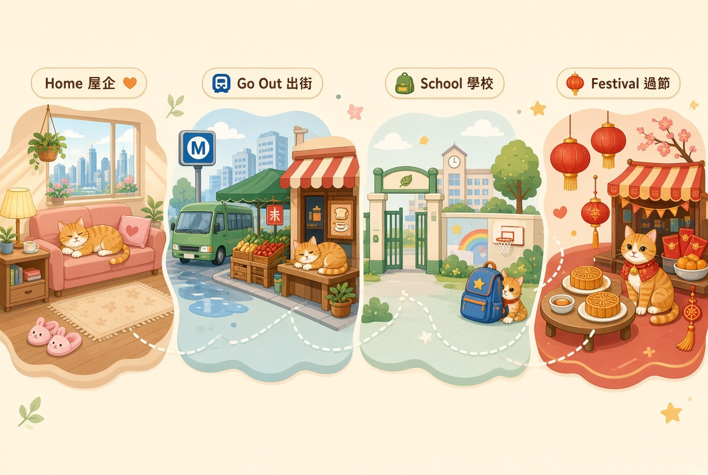
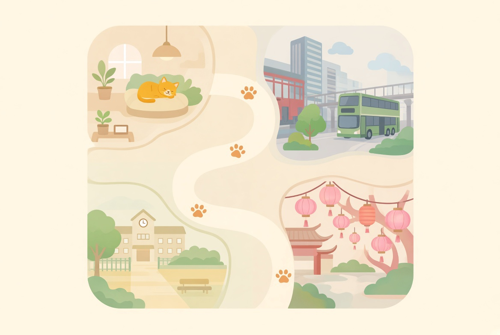
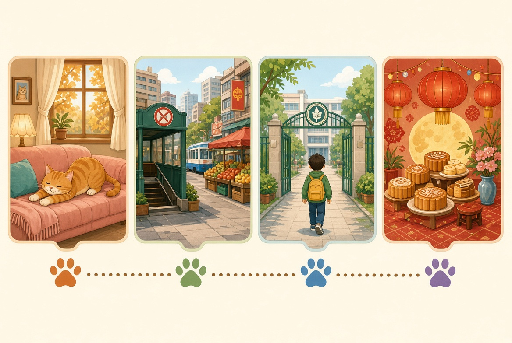
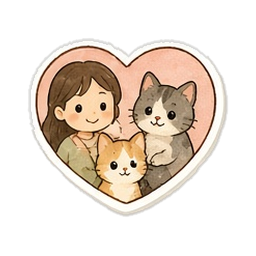
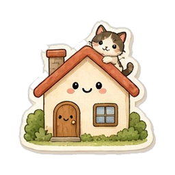
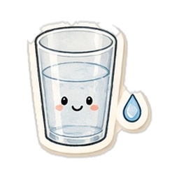
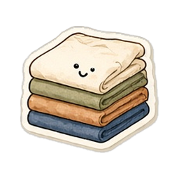
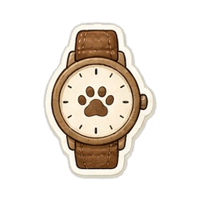

地圖用你畀嘅四張圖
手機打開地圖，就係下面直版呢張。左右掃先睇全景。進度總覽用四張旅程卡。首頁入口用縮圖。圖入面嘅屋、港鐵、學校、過節、貓、小路、路牌、窗燈，就係地圖。英文假頂欄唔搬入 app。心心同每日目標留喺而家嘅頂欄同「我」頁。
手機預設




主題節點改用生字卡圖
舊地圖蛇路上面嘅 emoji 唔再做主題圖示。每個主題用該主題其中一張生字卡圖。

家人family身體head

屋企home作息wake
食物noodles

茶餐廳water
衣服clothes顏色red
天氣weather

時間time動物animal
情緒happy
未解鎖要灰，食物都一樣
未解鎖嘅主題，張生字圖灰階、變淡。解鎖之後先有顏色。食物同其他主題同一規則。
食物 · 未解鎖灰階
食物 · 行緊有色
屋企 · 未解鎖灰階
屋企 · 行緊有色
而家 app 嘅蛇路只把 emoji 變淡。食物用咗麵嘅生字圖，未解鎖都仲係彩色。下一輪灰階打中張圖，食物冇例外。
路牌
| 路段 | 牌 |
|---|---|
| 屋企 → 出街 | 出門記得帶鎖匙。 |
| 出街 → 學校 | 鐘響之前，買個麵包都得。 |
| 學校 → 過節 | 功課放下，燈籠點起。 |
第 2 至第 4 季未有獨立生字圖之前，主題節點留空，唔再填 emoji。有圖之後用上面同一規則。app 呢輪冇改。